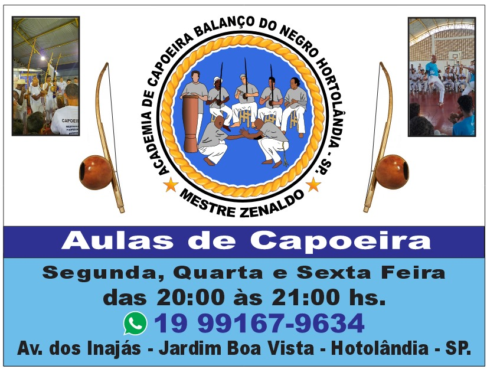
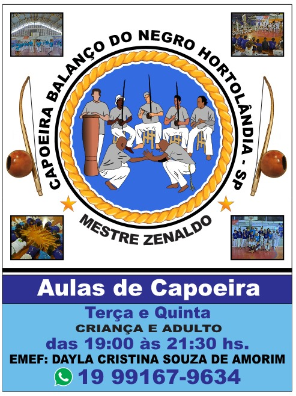

Jardim Boa Vista
Dias: Segunda, quarta e sexta-feira
Horário: 20h às 21h
Local: Avenida dos Inajás
Hortolândia - SP
Mais informaçõesAcademia de Capoeira - Mestre Zenaldo
Conheça a Academia de Capoeira Balanço do Negro e descubra a cultura, a música e os movimentos que fazem parte dessa tradição brasileira.
Conheça nossas aulasA Academia de Capoeira Balanço do Negro, sob a orientação do Mestre Zenaldo, realiza aulas de capoeira em Hortolândia - SP.
A capoeira é uma manifestação cultural brasileira que reúne luta, dança, música e tradição.
Confira os locais e encontre o melhor horário para você.
Dias: Segunda, quarta e sexta-feira
Horário: 20h às 21h
Local: Avenida dos Inajás
Hortolândia - SP
Mais informaçõesDias: Terça e quinta-feira
Horário: 19h às 21h30
Público: Crianças e adultos
Hortolândia - SP
Mais informaçõesConheça os locais e horários das nossas aulas.


Ficou interessado? Entre em contato com o Mestre Zenaldo para obter mais informações.
Fale conosco pelo WhatsApp